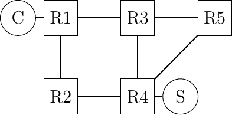
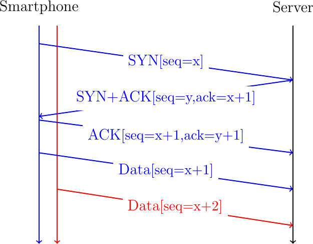
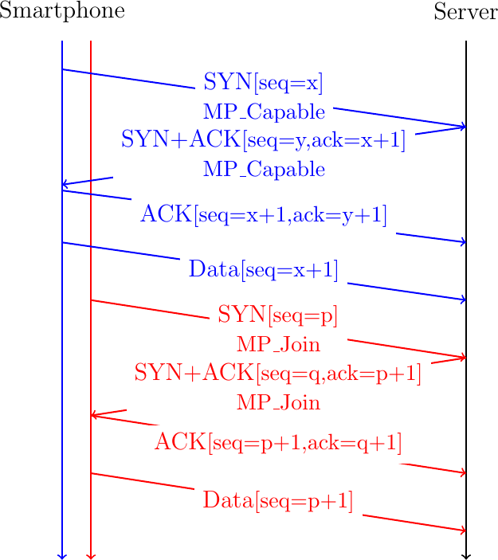
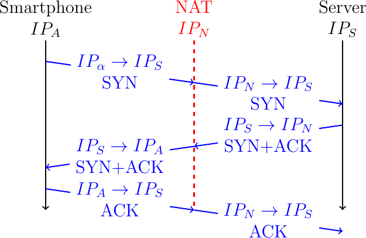
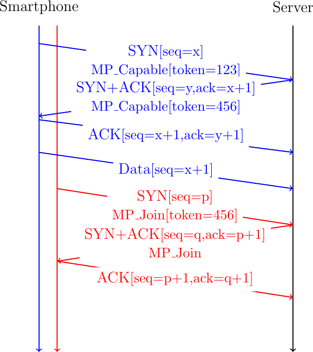

Multipath TCP¶
Todo
all the details behind MPTCP
Todo
focus on MPTCP version 1 and briefly explain version 0
Multipath TCP [48] is an extension to the TCP protocol [5] that was presented earlier. We start with an overview of Multipath TCP. Then we explain how a Multipath TCP connection can be established. Then we analyze how data is exchanged over different paths and explain the multipath congestion control schemes. Finally, we explain how Multipath TCP connections can be terminated.
An overview of Multipath TCP¶
The main design objective for Multipath TCP [9] was to enable hosts to exchange the packets that belong to a single TCP connection over different network paths. Several definitions are possible for a network path. Considering a TCP connection between a client and a server, a network path can be defined as the succession of the links and routers that create a path between the client and the server. For example, in Fig. 34, there are many paths between the client host C and the server S, e.g. \(C \rightarrow R1 \rightarrow R2 \rightarrow R4 \rightarrow S\) and \(C \rightarrow R1 \rightarrow R3 \rightarrow R4 \rightarrow S\), but also \(C \rightarrow R1 \rightarrow R3 \rightarrow R5 \rightarrow R4 \rightarrow S\) or even \(C \rightarrow R1 \rightarrow R2 \rightarrow R4 \rightarrow R3 \rightarrow R5 \rightarrow R4 \rightarrow S\).

Fig. 34 A simple network
During the first discussions on Multipath TCP within the IETF, there was a debate on the types of paths that Multipath TCP could use in IP networks. Although networks provide a wide range of paths between a source and a destination, it is not necessarily simple to use all these paths in a pure IP network. Looking a Fig. 34 and assuming that all links have the same IGP weigth, packets sent by C will follow one of the two shortest paths, i.e. \(C \rightarrow R1 \rightarrow R2 \rightarrow R4 \rightarrow S\) or \(C \rightarrow R1 \rightarrow R3 \rightarrow R4 \rightarrow S\). Since routers usually use hash-hased load-balancing [11] to distribute packets over equal cost paths, all the packets from a given connection will follow either the first or the second shortest path. In most networks, the path followed by a TCP connection will only change if there are link or router failures on this particular path.
When Multipath TCP was designed, the IETF did not want to design techniques to enable the transport layer to specify the paths that packets should follow. They opted for a very conservative definition of the paths that Multipath TCP can use [49]. Multipath TCP assumes that the endpoints of a TCP connection are identified by their IP addresses. If two hosts want to exchange packets over different paths, then at least one of them must have two or more IP addresses. This covers two very important use cases:
mobile devices like the smartphones that have a cellular and a Wi-Fi network interface each identified by its own IP address
dual-stack hosts that have both an IPv4 and an IPv6 address
In this document, we will often use smartphones to illustrate Multipath TCP client hosts. This corresponds to a widely deployed use case that simplifies many of the examples, but is not the only possible deployment.
Note
Using non-equal cost paths with Multipath TCP
When Multipath TCP was designed, there was no standardized solution that enabled a host to control the path followed by its packets inside a network. This is slowly changing. First, the IETF has adopted the Segment Routing architecture [50]. This architecture is a modern version of source routing which can be used in MPLS and IPv6 networks. In particular, using the IPv6 Segment Routing Header [51], a host can decide the path that its packets will follow inside the network. This opens new possibilities for Multipath TCP. Some of these possibilities are explored by the Path Aware Networking Research Group of the Internet Research Task Force.
A second important design question for the Multipath TCP designers was how use two or more paths for a single connection ? As an example, let us consider a smartphone that interacts with a server. This smartphone has two different IP addresses: one over its Wi-Fi interface and one over its cellular interface. Assume that the smartphone initiates a TCP connection over its Wi-Fi interface. This handhsake is illustrated in blue in Fig. 35. It sends a data packet over this interface and the next one over the cellular one (shown in red).

Fig. 35 A naive approach to create a Multipath TCP connection
This utilization of the two paths between the smartphone and the server pose two different problems. First, the server must be able to accept the packet sent by the smarphone, that uses another source IP address than the address used during the handshake and associate it with an existing Multipath TCP connection. If the server blindingly accept this packet from another address than the one used during the handshake, then there are two main security risks. An attacker could inject a packet inside an existing connection. Furthermore, he could cause a denial of service attack by sending a spoofed packet in an existing connection that requests the server to send a large volume of data to the spoofed address. Second, a middlebox such as a firewall on the cellular path between the smartphone and the server could block the packet because it does not belong to a TCP connection created on the cellular path.
To cope with this problem, the Multipath TCP designers opted for an architecture where a Multipath TCP connection combines several TCP connections that are called subflows over the different paths. A Multipath TCP connection starts with a three-way handshake like a regular TCP connection. A client that wishes to use Multipath TCP sends a SYN with the MP_CAPABLE option to negotiate a Multipath TCP connection with a server. If the server replies with the same option, the handshake succeeds and creates the first subflow belonging to this Multipath TCP connection. The client and the server can send data over this connection as over any TCP connection. To use a second path, the client (or the server), must initiate another TCP handshake over the new path. The SYN sent over this second path uses the MP_JOIN option to indicate that this is an additional subflow that must be linked to an existing Multipath TCP connection. This is illustrated in Fig. 36.

Fig. 36 A Multipath TCP connection with two subflows
These two three-way handshakes create two TCP connections called subflows in the Multipath TCP terminology. It is interesting to analyze how these two connections are identified on the server. A host identifies a TCP connection using four identifiers that are present in all the packets of this connection:
the local IP address
the remote IP address
the local port
the remote port
Assume that the client uses IP address \(IP_{\alpha}\) on its Wi-Fi intefance and \(IP_{\beta}\) on its cellular interface and that \(p\) is the port used by the server. If the client used port \(p_1\) to create the initial subflows, then the identifier of this subflow on the server is \(<IP_{S},IP_{\alpha},p,p_{1}>\). Similarly, the second subflow is identified by the \(<IP_{S},IP_{\beta},p,p_{2}>\) tuple on the server. Note that these two connection identifiers differ by at least one IP address as specified in [49].
A server usually manages a large number of simulatenous connections. When it receives the SYN for the second subflow, it must be able to link this new subflow with the corresponding Multipath TCP connection. For this, the client must include an identifier of associated Multipath TCP connection in its MP_JOIN option. This identifier must unambiguously identify the corresponding Multipath TCP connection on the server.
A first possible identifier is the four tuple that identifies the initial subflow, i.e. \(<IP_{S},IP_{\alpha},p,p_{1}>\). If the server received this identifier in the MP_JOIN option, it could link the new subflow to the previous one. Unfortunately, this solution does not work in today’s Internet. The main concern comes from the middleboxes such as NATs and transparent proxies. To illustrate the problem, consider a simple NAT, such as the one used on most home Wi-Fi access points. Fig. 37 illustrates a handshake in such an evnrionment. If we assume that the NAT only changes the client’s IP address, then the connection is identified by the \(<IP_{A},IP_{S},p,p_{1}>\) tuple on the smartphone and \(<IP_{S},IP_{N},p,p_{1}>\) on the server. Note that a NAT could also change the client port. If the smartphone places its local connection identifier inside an MP_JOIN option, the server might not be able to recognise the corresponding connection in the SYN packets that it received.

Fig. 37 With Network Address Translation, A naive approach to create a Multipath TCP connection
To cope with this problem, Multipath TCP uses a local identifier, called token in the Multipath TCP specification, to identify each Multipath TCP connection. The client assigns its token when it initiates a new Multipath TCP connection. A server assigns its token when it accepts a new Multipath TCP connection. These two tokens are chosen idependently by the client and the server. For security reasons, they should be random. The MP_JOIN option contains the token assigned by the remote host. This is illustrated in Fig. 38. The server assigns token 456 to the Multipath TCP connection created as the first subflow. It informs the smartphone by sending this token in its MP_CAPABLE option in the SYN+ACK. When the client creates the second subflow, it includes this token in the MP_JOIN option of its SYN.

Fig. 38 A Multipath TCP connection with two subflows
Note
Multipath TCP in datacenters
The Multipath TCP architecture [49] assumes that at least one of the communicating hosts will use different IP addresses to identify the different paths used by a Multipath TCP connection. In practice, this architectural requirement is not always enforced by Multipath TCP implementations. A Multipath TCP implementation can combine different subflows into one Multipath TCP connection provided that each subflow is identified by a different four-tuple. Two subflows between two communicating hosts can differ in their client-selected ports. This solution has been chosen when Multipath TCP was proposed to mitigate congestion in datacenter networks [10].
Several designs exist for datacenter networks, but the fat-tree architecture shown in Fig. 39 is a very popular one.
Fig. 39 A simple datacenter network :libs: positioning, matrix, arrows, math
Connection establishment¶
A Multipath TCP connection starts with a three-way handshake like a regular TCP connection. To indicate that it wishes to use Multipath TCP, the client adds the MP_CAPABLE option to the SYN segment. In the SYN segment, this option only contains some flags and occupies 4 bytes. The server replies with a SYN+ACK segment than contains an MP_CAPABLE option including a server generated 64 bits random key that will be used to authenticate connections over different paths. The client concludes the handshake by sending an MP_CAPABLE option in the ACK segment containing the random keys chosen by the client and the server.
Fig. 40 Negotiating the utilization of Multipath TCP during the three-way handshake
Note
Multipath TCP version 0
The first version of Multipath TCP used a slightly different handshake [9]. The MP_CAPABLE option sent by the client contains the 64 bits key chosen by the client. The SYN+ACK segment contains an MP_CAPABLE option with 64 bits key chosen by the server. The client echoes the client and server keys in the third ACK of the handshake.
Fig. 41 Negotiating the utilization of Multipath TCP version 0
The 64 bits random keys chosen by the client and the server play three different roles in Multipath TCP. Their first role is to identify the Multipath TCP connection to which an additional connection must be attached. Since a Multipath TCP connection can combine several TCP connections, Multipath TCP cannot use the IP addresses and port numbers to identify a TCP connection. Multipath TCP uses a specific identifier that is called a token. For technical reasons, this token is derived from the 64 bits key as the most significant 32 bits of the SHA-256 [52] hash of the key. The second role of the 64 bits keys is to authenticate the establishment of additional connections as we will see shortly. Finally, the keys are also used to compute random initial sequence numbers.
The main benefit of Multipath TCP is that a Multipath TCP connection can combine different TCP connections that potentially use different paths. Starting from now on, we will consider a client with two network interfaces and a server with one network interface. This could for example correspond to a client application running on a smartphone that interacts with a server. We explore more complex scenarios later.
We can know how a Multipath TCP connection can combine different TCP connections. According to the Multipath TCP specification, these connections are called subflows [48]. We also adopt this terminology in this document. Fig. 42 shows a Multipath TCP that combines two subflows. To establish the Multipath TCP connection, the client initiates the initial subflow by using the MP_CAPABLE option during the three-way handshake. At the end of the initial handshake, the client and the server have exchanged their keys. Based on their keys, they have both computed the token that the remote host uses to identify the Multipath TCP connection.
To attach a second subflow to this Multipath TCP connection, the client needs to create it. For this, it starts a three-way handshake with the server by sending a SYN segment containing the MP_JOIN option. This option indicates that the client uses Multipath TCP and wishes to attach this new connection to an existing Multipath TCP connection. The MP_JOIN option contains two important fields:
the token that the server uses to identify the Multipath TCP connection
a random nonce
The client has derived the token from the key announced by the server in the MP_CAPABLE option of the SYN+ACK segment on the initial subflow. Thanks to this token, the server knows to which Multipath TCP connection the new subflow needs to be attached.
Todo
discuss security concerns
The server uses the random nonce sent by the client and its own random nonce to prove its knowledge of the keys exchanged during the initial handshake. The server computes \(HMAC(Key=(Server_{key}||Client_{key}), Msg=(nonce_{Server}||nonce_{Client}))\), where || denotes the concatenation operation. It then returns the high order 64 bits of this HMAC in the MP_JOIN option of the SYN+ACK segment together with its 32 bits nonce. The client computes \(HMAC(Key=(Client_{key}||Server_{key}), Msg=(nonce_{Client}||nonce_{Server}))\) and sends the 160 bits HMAC in the ACK segment.
Fig. 42 MPTCP Join